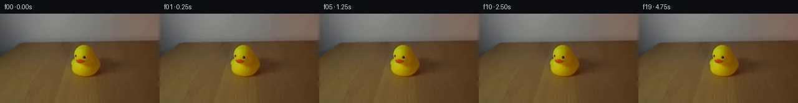

![首帧]()

Round 00
2026-11-05T02:04:40.534900+00:00像素候选变化代码 +134/−0inspection 更新
pixels 6cc87fe2359ddde2 · code ae372f778e48bb58
查看本轮 generate.py 真实 diff
--- previous/generate.py
+++ current/generate.py
@@ -0,0 +1,134 @@
+#!/usr/bin/env python3
+"""Generate the requested five-second stationary PixelWorld sequence."""
+
+from pathlib import Path
+
+import numpy as np
+from PIL import Image, ImageDraw
+
+import artifact_io
+
+
+ROOT = Path(__file__).resolve().parent
+FRAME_COUNT = 20
+HEIGHT = 144
+WIDTH = 256
+
+
+def load_source() -> np.ndarray:
+ """Load the sole scene input and enforce the required RGB geometry."""
+ with Image.open(ROOT / "first_frame.png") as image:
+ if image.mode != "RGB":
+ raise ValueError(f"first_frame.png must be RGB, got {image.mode!r}")
+ source = np.asarray(image, dtype=np.uint8).copy()
+ if source.shape != (HEIGHT, WIDTH, 3):
+ raise ValueError(f"unexpected first-frame shape: {source.shape}")
+ return source
+
+
+def build_frames(source: np.ndarray) -> np.ndarray:
+ """Repeat the source exactly because every described element is stationary."""
+ return np.repeat(source[np.newaxis, ...], FRAME_COUNT, axis=0)
+
+
+def make_transition_check(frames: np.ndarray) -> None:
+ """Write a numeric transition diagnostic without altering sequence pixels."""
+ differences = np.abs(
+ frames[1:].astype(np.int16) - frames[:-1].astype(np.int16)
+ )
+ changed = np.any(differences != 0, axis=3)
+ max_channel_delta = differences.max(axis=(1, 2, 3))
+ changed_counts = changed.sum(axis=(1, 2))
+
+ # The image has one tile for every consecutive-frame difference. Black
+ # means no RGB change. The text reports the computed validation metrics.
+ tile_width, tile_height = 128, 72
+ columns = 5
+ rows = 4
+ margin_x, margin_y = 18, 72
+ gap_x, gap_y = 10, 25
+ canvas_width = margin_x * 2 + columns * tile_width + (columns - 1) * gap_x
+ canvas_height = margin_y + rows * tile_height + (rows - 1) * gap_y + 42
+ diagnostic = Image.new("RGB", (canvas_width, canvas_height), (28, 31, 38))
+ draw = ImageDraw.Draw(diagnostic)
+ draw.text((18, 14), "CONSECUTIVE FRAME TRANSITION CHECK", fill=(245, 245, 245))
+ draw.text(
+ (18, 34),
+ "19 transitions | changed pixels: 0 | maximum channel delta: 0",
+ fill=(134, 226, 154),
+ )
+
+ for index in range(FRAME_COUNT - 1):
+ row, column = divmod(index, columns)
+ x = margin_x + column * (tile_width + gap_x)
+ y = margin_y + row * (tile_height + gap_y)
+ # White would mark a changed pixel. Nearest-neighbor resize preserves
+ # the exact binary nature of the map.
+ difference_map = Image.fromarray(changed[index].astype(np.uint8) * 255, "L")
+ difference_map = difference_map.resize(
+ (tile_width, tile_height), Image.Resampling.NEAREST
+ ).convert("RGB")
+ diagnostic.paste(difference_map, (x, y))
+ draw.rectangle(
+ (x, y, x + tile_width - 1, y + tile_height - 1),
+ outline=(82, 89, 102),
+ )
+ draw.text(
+ (x + 2, y + tile_height + 4),
+ f"{index:02d}->{index + 1:02d} px={int(changed_counts[index])} max={int(max_channel_delta[index])}",
+ fill=(203, 208, 218),
+ )
+
+ diagnostic.save(ROOT / "transition_check.png")
+
+
+def pack_rgb(frames: np.ndarray) -> np.ndarray:
+ values = frames.astype(np.uint32)
+ return (
… diff truncated; 47 more lines …